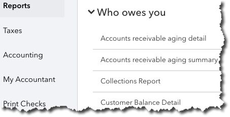
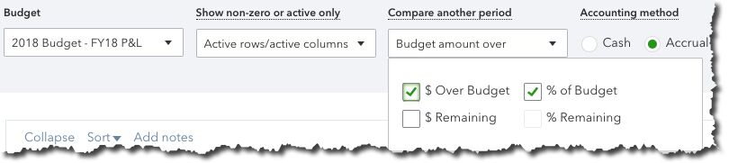

There are numerous QuickBooks Online reports that you should be consulting at regular intervals. But you need these five at least every week.
QuickBooks Online’s Dashboard, the first screen you see when you log in, provides an effective overview of your company’s finances. It contains at-a-glance information about your recent expenses, your sales, and the status of your invoices. It displays a simple Profit and Loss graph and a list of your account balances. Scroll down and click the See all activity button in the lower right and your Audit Log opens, a list of everything that’s been done on the site and by whom.
You can actually get a lot of work done from this page. Click the bar on the Invoices graph, for example, and a list view opens, allowing you access to individual transactions. Click Expenses to see the related Transaction Report. Below the list of account balances, you can Go to registers and connect new accounts.
The Dashboard supplies enough information that you can spot potential problems with expenses and sales, accounts, and overdue invoices. But you’re likely to have other tasks that require attention. How’s your inventory holding up? Are you staying within your budget? How about your accounts payable – will you owe money to anyone soon?
QuickBooks Online offers dozens of report templates that answer these questions and many more. If you’ve never explored the list, we suggest that you do so. It’s impossible to make plans for your company’s future without understanding its financial history and current state.
QuickBooks Online has many reports that can provide real-time, in-depth insight into your company’s financial health.
When you click Reports in your QuickBooks Online toolbar, the view defaults to All. The site divides its report content into 10 different sections, including Business Overview, Sales and Customers, Expenses and Vendors, and Payroll. Each has two buttons to the right of its name.
Click the star, and that report’s title will appear in your Favorites list at the top of the page. This will save time since you’ll be able to quickly find your most often-used reports. Click the three vertical dots and then Customize to view your customization options for that report (you’ll have access to this tool from the reports themselves).
You can, of course, run any report you’d like as often as you’d like. Most small businesses, though, don’t require this frequent intense scrutiny. But there are five reports that you do want to consult on a regular basis. They are:
Warning: Some reports let you choose between cash and accrual basis. Do you know the difference and which you should choose? Ask us.
You can customize QuickBooks Online reports in several ways.
Note that there’s a category of reports in QuickBooks Online named For My Accountant. That’s where we come in. The site includes templates for reports that you can run yourself, but that you’d have difficulty customizing and analyzing. These standard financial reports—which, by the way, you’ll need if you create a business plan or try to get funding for your business—include Balance Sheet, Statement of Cash Flows, and Trial Balance.
You don’t need to have these reports generated frequently, but you should be learning from the insight they provide monthly or quarterly. We can handle this part of your accounting tasks for you, as well as any other aspect of financial management where you need assistance. Contact us, and we’ll see where we might help provide the feedback and bookkeeping expertise that can help you make better decisions for the future of your business.
QuickBooks Online reports pick up where the Dashboard leaves off, providing dozens of templates ready for your company data. Do you know how to best use them?
You can create some QuickBooks Online reports using either cash or accrual basis. Do you know the difference? Ask us if you don’t.
Overwhelmed by the number of reports QuickBooks Online offers? Click the star next to the ones you run most often, and they’ll appear in Favorites.
QuickBooks Online contains several reports in a section titled For My Accountant. These are complex financial reports that we can run and analyze for you.